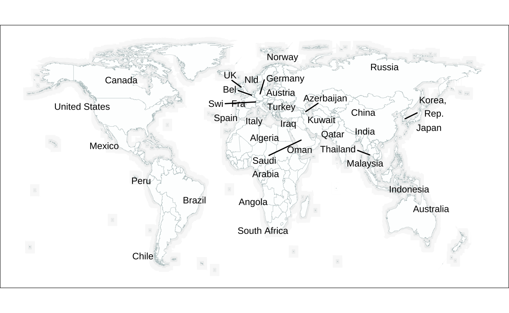

Introduction
The visualisation shown below by the resourcetrade.earth initiative explores global trade flows in 2022.

It shows the biggest bilateral trade trade flows in 2022, i.e., trade between two different countries. The thickness of the curved trade flows represents trade volume, while the gradient color scheme, the arrows and the thickness along the flow describe the directionality of trade. For instance, the flows start very thin at the exporting country and get progressively thicker until they reach the importing country. The trade is in commodities, ranging from fertilizers, oilseeds or live animals to natural gas, iron and steel or pearls. The raw data is from the UN Comtrade data set and then re-organised and cleaned by the team at resourcetrade.earth. The actual visualisation was made by the design agency applied.works.
The rest of this blog post is divided in two steps. First, we will replicate the visualisation. Then, we will produce alternative visualisations that aim to address some of the original plots shortcomings.
Replication
The replication process is divided in three separate steps:
Preliminaries
Country labels and annotations
Trade flows
1. Preliminaries
Libraries
We will use the following libraries for the replication.
Get the data
The data is provided by resourcetrade.earth. We simply need to click on the Download button in the right-bottom of the plot to download an Excel file.
data_raw <- read_excel(
"resourcetradeearth-all-all-all-2022.xlsx",
sheet = "Trades")Clean the data
The initial dataset is extensive, containing almost 5 million observations with many variables that are not needed for our visualization. Thus, we will clean this dataset in two steps:
- Filter for only 2022 trade data, as this matches the time period shown in the original visualization
- Select five essential variables: the ISO3 code and name for both exporting and importing countries, and the trade volume for each country pair or flow
data <- data_raw |>
# filter for only 2022 trade data
filter(Year == 2022) |>
# select essential variables: info about exporter, importer and trade volume
select(`Exporter ISO3`, Exporter,
`Importer ISO3`, Importer,
`Value (1000USD)`) |>
# finally, rename for easier handling later
rename(
Exporter_ISO3 = `Exporter ISO3`,
Importer_ISO3 = `Importer ISO3`,
Value = `Value (1000USD)`)At this stage, our data is disaggregated by resource types (such as forestry products, fossil fuels, and metals). This means that for each country pair, we have multiple rows representing different types of traded resources. However, the original visualization shows total trade flows between countries, summed across all resource types. Therefore, we need to aggregate the data by summing up all trade volumes for each country pair.
Looking at the original visualization, we can see a note in the bottom-right corner, indicating that it displays the 76 largest trade flows. To match this, we will filter our dataset to keep only the 76 largest trade flows.
# filter for the 76 largest trade flows
data_2_filtered <- data_2 |>
slice_max(order_by = Total_Value, n = 76)We also need to standardise some country names to make sure that the trade data and the map data use the same names.
# create mapping for country name standardisation
country_name_mapping <- data.frame(
original = c(
"United States", "United Arab Emirates", "Korea, Republic",
"Russian Federation", "China, Hong Kong SAR", "Areas, nes",
"Rest of America, nes", "United Kingdom"),
mapped = c(
"USA", "UAE", "South Korea", "Russia", "Hong Kong",
"Areas, nes", "Rest of America, nes", "UK"))
# apply the standardised names to both exporters and importers
data_2_filtered <- data_2_filtered |>
# first standardise exporter names
left_join(country_name_mapping, by = c("Exporter" = "original")) |>
mutate(Exporter = ifelse(!is.na(mapped), mapped, Exporter)) |>
select(-mapped) |>
# now standardise importer names
left_join(country_name_mapping, by = c("Importer" = "original")) |>
mutate(Importer = ifelse(!is.na(mapped), mapped, Importer)) |>
select(-mapped)Map Processing
Before we create our world map, we need to establish base coordinates that we will use both for positioning country labels and for drawing the trade flows between countries. We will start by creating an empty base world map in three steps:
- Simplify the world map by removing small islands and regions that are not in the original plot
- Create the two buffer zones to give the map depth
- Apply the correct color scheme using precise hex codes
We used latlong.net, which provides precise longitude and latitude data for geographic locations. Moreover, we used imagecolorpicker to get the hex color codes of the land and sea masses and the two buffer zones.
world_map <- map_data("world") |>
# filter many of the small islands
filter(!(region %in% c(
"French Southern and Antarctic Lands",
"Micronesia", "Marshall Islands", "Kiribati",
"Tuvalu", "American Samoa", "Solomon Islands",
"Vanuatu", "New Caledonia", "Fiji", "Samoa",
"Tonga", "Cook Islands", "Wallis and Futuna",
"Niue", "Tokelau", "French Polynesia",
"Pitcairn Islands", "Comoros", "Mauritius", "Seychelles",
"Maldives", "Cape Verde", "Sao Tome and Principe",
"Saint Helena", "Palau", "Northern Mariana Islands",
"Nauru", "Christmas Island", "Cocos Islands",
"Norfolk Island"))) |>
# filter out all Pacific islands except for Australia
filter(!(long > 140 & lat < 30 & lat > -30) | region == "Australia") |>
# filter out Antarctica
filter(lat > -60)The original visualization has distinctive layers. These layers create some depth effect. The land masses are bordered by a small dark grey buffer zone. And this buffer zone is bordered by another slightly larger light grey buffer zone. In the following, we will create these buffers or layers. I estimate that the large buffer is about three times larger than the small buffer.
# small buffer - closest to the actual landmass
buffer_small <- world_map |>
group_by(group) |>
mutate(
long = long + sign(long - mean(long)) * 1.25,
lat = lat + sign(lat - mean(lat)) * 1.25)
# large buffer - creates the outermost layer
buffer_large <- world_map |>
group_by(group) |>
mutate(
long = long + sign(long - mean(long)) * 3.75,
lat = lat + sign(lat - mean(lat)) * 3.75)We will use the Gudea font which comes closest to the font used in the original plot. We used myfonts.com to detect the font.
Now we can plot the world map.
# get the font right
sysfonts::font_add_google("Gudea", family = "gudea")
showtext::showtext_auto()
# create the basic world map with layers
p <- ggplot() +
# sea layer (furthest)
geom_polygon(
data = buffer_large,
aes(x = long, y = lat, group = group),
fill = "#ffffff",
alpha = 0.15,
color = NA) +
# second transition layer
geom_polygon(
data = buffer_large,
aes(x = long, y = lat, group = group),
fill = "#f9f9f9",
color = NA) +
# first transition layer
geom_polygon(
data = buffer_small,
aes(x = long, y = lat, group = group),
fill = "#eff0f0",
color = NA) +
# land layer (topmost)
geom_polygon(
data = world_map,
aes(x = long, y = lat, group = group),
fill = "#ffffff",
alpha = 0.95,
color = "#b8c6c7",
size = 0.1) +
# set the coordinate system and aspect ratio
coord_fixed(1.3) +
# remove axes and grid
theme_void() +
# customize the theme
theme(
panel.background = element_rect(fill = "#ffffff"),
plot.background = element_rect(fill = "#ffffff"))
# display the base map
print(p)2. Country labels and annotations
Positioning of country labels
First, we need to get the country names right. To this end, we create a mapping from the semi-official country names to the names used in the visualisation. Note that this mapping defines how the country names eventually appear on the map, whereas the standardisation in country_name_mapping was about matching the names in the trade dataset with the names used in the map data.
country_labels <- data.frame(
Country = c(
# all the countries in the plot
"Belgium", "Netherlands", "Germany", "France", "Italy",
"Switzerland", "Austria", "Spain", "UK",
"USA", "Canada", "Mexico", "Brazil", "Peru", "Chile", "Norway",
"Russia", "China", "Japan", "South Korea", "India", "Australia",
"Indonesia", "Malaysia", "Thailand", "Hong Kong",
"UAE", "Saudi Arabia", "Kuwait", "Qatar", "Oman", "Iraq", "Azerbaijan",
"Turkey", "Algeria", "Angola", "South Africa"),
# the actual labels of all the countries in the plot
Label = c(
"Bel", "Nld", "Germany", "Fra", "Italy", "Swi", "Austria", "Spain", "UK",
"United States", "Canada", "Mexico", "Brazil", "Peru", "Chile", "Norway",
"Russia", "China", "Japan", "Korea, \nRep.", "India", "Australia",
"Indonesia", "Malaysia", "Thailand", "Hong Kong",
"UAE", "Saudi \nArabia", "Kuwait", "Qatar", "Oman", "Iraq", "Azerbaijan",
"Turkey", "Algeria", "Angola", "South Africa"))We also need to add coordinates for the two special areas: Rest of America, nes and Areas, nes. Here, nes stands for not elsewhere specified and refers to unknown trading partners. This can occur when reporting countries do not submit details about the trading partner, either due to low- value trade or to protect company information. Rest of America, nes represents unspecified trading partners specifically within the Americas. We need to do this manually:
special_areas_coords <- data.frame(
Country = c("Areas, nes", "Rest of America, nes"),
long = c(4.46, -111.861620),
lat = c(-50.49, 1.691649))One of the key challenges in replicating this visualization is the precise positioning of country labels. The country labels are also the start and end points of the trade flows. Thus, we really do need to get the labels positions right to match the original plot.
The positions of the country labels are not in the dataset. But we can automatically determine the positions by calculating the centroid of each country and placing it at this point.
# calculate basic country centroids
country_coords <- world_map |>
group_by(region) |>
summarize(
long = mean(long),
lat = mean(lat)) |>
rename(Country = region)
# combine the country_coords with the special_areas_coords
all_coords <- country_coords |>
bind_rows(special_areas_coords)
# prepare the trade flow data by adding start and end coordinates for each flow
# we do this here since we have just created our complete coordinate system and
# we will need this data structure for both label positioning and trade flow
# visualisation later
data_2_filtered_with_coords <- data_2_filtered |>
left_join(all_coords, by = c("Exporter" = "Country")) |>
rename(Export_Long = long, Export_Lat = lat) |>
left_join(all_coords, by = c("Importer" = "Country")) |>
rename(Import_Long = long, Import_Lat = lat)Now we can create a plot with the labels positioned at the countries centroids.
The positions of the country labels do not match the positions in the original
plot. For instance, the label United States is located at the North-West of
the US. This is because of Alaska shifting the centroid in this direction.
Additionally, the labels in Europe and the Middle East are too cluttered.
We can try geom_text_repel() from the ggrepel package which automatically
adjusts label positions to avoid overlaps while trying to keep labels close to
their associated points.
p +
geom_text_repel(
data = country_labels %>% left_join(all_coords, by = "Country"),
aes(x = long, y = lat, label = Label),
size = 3,
max.overlaps = Inf)
While geom_text_repel() solves the issue of cluttered labels in Europe and the
Middle East, the positions of the labels still do not match the ones in the
original plot.
Note that an approach using the capital cities as reference points for the country labels does not work either. We have no alternative but to place the country labels manually, again using a longitude and latitude finder in the web.
# custom coordinates of country labels
label_adjustments <- data.frame(
Country = c(
# South America
"Peru", "Brazil", "Chile",
# North America
"USA", "Canada", "Mexico",
# Asia
"Russia", "India", "Indonesia", "Malaysia", "Thailand", "China", "Japan",
"South Korea", "Oman", "UAE", "Qatar", "Saudi Arabia", "Kuwait", "Iraq",
"Hong Kong",
# Europe
"Norway", "Turkey", "Azerbaijan", "Spain", "France", "Italy", "UK",
"Belgium", "Germany", "Switzerland", "Netherlands", "Austria",
# Africa
"South Africa", "Angola", "Algeria",
# Australia
"Australia"),
long = c(
# South America
-75.951872, -56.385277, -70.830462,
# North America
-99.308645, -95.202345, -101.812930,
# Asia
71.909173, 77.324934, 119.847050, 112.765282, 101.445301, 102.411087,
139.182451, 127.749200, 58.621072, 57.301851, 55.324885, 37.991606,
44.178739, 40.544111, 115.203854,
# Europe
10.406986, 29.882086, 50.675979, -4.881616, 0.155130, 11.260573, -6.355075,
0.450087, 18.697300, 7.885837, 1.838480, 19.122010,
# Africa
25.354109, 18.169549, 2.914381,
# Australia
133.363988),
lat = c(
# South America
-10.772603, -10.569497, -30.133251,
# North America
38.649053, 60.089502, 22.549343,
# Asia
61.363171, 20.014000, -4.952090, 1.019271, 14.721046, 35.037486, 33.954752,
37.660866, 15.703697, 21.612749, 26.063568, 21.687738, 29.666373, 33.928121,
21.943046,
# Europe
61.160132, 39.118608, 40.019727, 39.139647, 43.635898, 39.739402, 55.073748,
48.931973, 52.130221, 47.172791, 56.207238, 44.663403,
# Africa
-29.271098, -13.306108, 27.232120,
# Australia
-24.820393))
# apply the adjustments to our labels
country_labels_adj <- country_labels %>%
left_join(label_adjustments, by = "Country")Now, the positions of the country labels match the ones in the original plot quite well.
Refinement of labels
While the country labels are now correctly positioned, we still need to do fine- tuning to match the original plots labels. The original plot has some text halo effect. This does not only look nice but also ensures better readability when labels overlap with trade flows. We recreate this halo effect as follows:
- Place multiple white labels behind each text label (which is black)
- Use slightly larger white text (size 1.75-1.77) than black text (size 1.65) to create a solid white outline
In this step, we will also add the two nes areas.
p <- p +
geom_text(data = country_labels_adj,
aes(x = long - 0.1, y = lat, label = Label),
size = 1.75,
color = "white",
fontface = "bold",
# we need to adjust the lineheight argument for "Korea, \nRep." and
# "Saudi \n Arabia" to make sure that the vertical spacing is fine
lineheight = .9) +
geom_text(data = country_labels_adj,
aes(x = long + 0.1, y = lat, label = Label),
size = 1.75,
color = "white",
fontface = "bold",
lineheight = .9) +
geom_text(data = country_labels_adj,
aes(x = long, y = lat - 0.1, label = Label),
size = 1.75,
color = "white",
fontface = "bold",
lineheight = .9) +
geom_text(data = country_labels_adj,
aes(x = long, y = lat + 0.1, label = Label),
size = 1.75,
color = "white",
fontface = "bold",
lineheight = .9) +
# add country labels (white)
geom_text(data = country_labels_adj,
aes(x = long, y = lat, label = Label),
size = 1.77, # slightly larger than the black text
color = "white",
fontface = "bold",
lineheight = .9) +
# add country labels (black)
geom_text(data = country_labels_adj,
aes(x = long, y = lat, label = Label),
size = 1.65,
color = "black",
fontface = "bold",
lineheight = .9) +
# add rectangles for nes areas
geom_rect(data = data.frame(
xmin = c(special_areas_coords[1,2] - 11.75,
special_areas_coords[2,2] - 22.5),
xmax = c(special_areas_coords[1,2] + 11.75,
special_areas_coords[2,2] + 22.5),
ymin = c(special_areas_coords[1,3] - 2.6,
special_areas_coords[2,3] - 2.6),
ymax = c(special_areas_coords[1,3] + 2.6,
special_areas_coords[2,3] + 2.6),
label = c("Areas, nes", "Rest of America, nes")),
aes(xmin = xmin, xmax = xmax, ymin = ymin, ymax = ymax),
fill = "#ffffff",
alpha = .9,
color = "#cccccc",
size = 0.3) +
# add text labels for nes areas
geom_text(data = data.frame(
x = c(special_areas_coords[1,2], special_areas_coords[2,2]),
y = c(special_areas_coords[1,3], special_areas_coords[2,3]),
label = c("Areas, nes", "Rest of America, nes")),
aes(x = x, y = y, label = label),
size = 1.65,
fontface = "bold") +
theme(text = element_text(family = "gudea"))
print(p)Annotations
Finally, we can add the legend Scale in the bottom-left. This legend helps reader understand the trade flows more easily by showing how the thickness of the flows corresponds to trade volume. We leave out the other annotations as these do not add anything meaningful to the plot.
p <- p +
annotation_custom(
grid::rasterGrob(
png::readPNG("legend.png"),
x = unit(0.15, "npc"),
y = unit(0.15, "npc"),
width = unit(0.1, "npc")))
print(p)3. Trade flows
The most complex part of this visualization is the trade flows. In the original plot the trade flows have a unique leftward curvature. They start from the exporting country and curve left before turning right at about halfway to the importing country. Moreover, the flows get progressively larger: the flows are very thin at their starting point (the exporting country) and get larger as they reach the importing country. Additionally, the colour of the flows changes as they progress. Finally, the flows have an arrow which shows the directionality of trade.
Prepare trade flow coordinates
Before we can create the trade flows, we need to ensure we have the correct coordinates for both the start (exporter) and end (importer) of each flow. These coordinates should match the positions of our manually adjusted country labels rather than the geographical centroids we initially calculated.
# merge our manual label positions with the trade flow data
data_2_filtered_with_coords <- data_2_filtered |>
# join with label_adjustments for exporter coordinates
left_join(label_adjustments, by = c("Exporter" = "Country")) |>
rename(Export_Long = long, Export_Lat = lat) |>
# join again with label_adjustments for importer coordinates
left_join(label_adjustments, by = c("Importer" = "Country")) |>
rename(Import_Long = long, Import_Lat = lat)
# update any missing coordinates
data_2_filtered_with_coords <- data_2_filtered_with_coords |>
left_join(special_areas_coords, by = c("Exporter" = "Country")) |>
mutate(
Export_Long = coalesce(Export_Long, long),
Export_Lat = coalesce(Export_Lat, lat)) |>
select(-long, -lat) |>
left_join(special_areas_coords, by = c("Importer" = "Country")) |>
mutate(
Import_Long = coalesce(Import_Long, long),
Import_Lat = coalesce(Import_Lat, lat)) |>
select(-long, -lat)Calculating Bezier curves
Rather than directly using geom_bezier(), we create a custom function to
calculate the Bezier curves. The reason for this decision is that we will later
need to add arrows embedded in the trade flows. These arrows follow the same
path as the trade flows but end a bit before the trade flows. Calculating the
Bezier curves ourselves allows us to access and control the curve coordinates,
which is necessary to make the arrows shorter than the trade flows. This was
difficult to achieve with geom_bezier().
We go for simpler quadratic Bezier curves which use just one control point. Here is the function that calculates these curves:
calculate_bezier_points <- function(x1, y1, cx, cy, x2, y2, n = 100,
start_offset = 2, end_offset = 2) {
# calculate points along the Bezier curve
t <- seq(0, 1, length.out = n)
x <- (1-t)^2 * x1 + 2*(1-t)*t * cx + t^2 * x2
y <- (1-t)^2 * y1 + 2*(1-t)*t * cy + t^2 * y2
points <- data.frame(x = x, y = y)
# calculate distances from endpoints
start_distances <- sqrt((x - x1)^2 + (y - y1)^2)
end_distances <- sqrt((x - x2)^2 + (y - y2)^2)
# filter points based on offset
valid_points <- points[start_distances >= start_offset &
end_distances >= end_offset, ]
# safety check: in case we filtered out too many points,
# return a minimal valid set
# rule: if filtering left us with fewer than 3 points
# (which would create a poor curve), then:
# (1) take just 3 points along the curve (at 15%, 50%, and 85% of the way)
# (2) calculate their positions using the same Bezier formula
# (3) use these as our points instead
if(nrow(valid_points) < 3) {
t_subset <- c(0.15, 0.5, 0.85)
x_subset <- (1-t_subset)^2 * x1 +
2*(1-t_subset)*t_subset * cx + t_subset^2 * x2
y_subset <- (1-t_subset)^2 * y1 +
2*(1-t_subset)*t_subset * cy + t_subset^2 * y2
valid_points <- data.frame(x = x_subset, y = y_subset)
}
return(valid_points)
}We add some offset to the start and end. Removing points that are too close to
the start or end points will avoid overlap of the trade flows with the country
labels. For some specific cases, we will later use custom offsets.
Creating initial trade flows
Now that we have our custom function to calculate Bezier curves, we need to determine where we want to place the control point for each trade flow. This control point will define how each curve bends. The process is as follows:
Find the midpoint between the origin and destination of each trade flow
Calculate how far to offset this midpoint perpendicular to the direction
Convert the flows into a format with three points: start, control, and end
For the offset calculation, we make it proportional to the distance between countries: longer trade flows get larger offsets, creating more pronounced curves. These decisions are based on a careful observation of the original visualisation.
# calculate control points for Bezier curves
trade_flows_with_bezier <- data_2_filtered_with_coords |>
rowwise() |>
mutate(
# calculate midpoint for control point
xm = (Export_Long + Import_Long)/2,
ym = (Export_Lat + Import_Lat)/2,
# calculate offset for control point
dx = Import_Long - Export_Long,
dy = Import_Lat - Export_Lat,
dist = sqrt(dx^2 + dy^2),
offset = 0.25 * dist, # the result of a lot of testing
# calculate control point with offset
control_x = xm - offset * (Import_Lat - Export_Lat)/dist,
control_y = ym + offset * (Import_Long - Export_Long)/dist) |>
ungroup() |>
# create three rows per flow (start, control, end points)
group_by(Exporter, Importer) |>
summarise(
x = c(Export_Long, control_x, Import_Long),
y = c(Export_Lat, control_y, Import_Lat),
point = 1:3,
Total_Value = first(Total_Value))Custom offsets
The case of China needs special care as it is the most cluttered label. Specifically, we need to use custom offsets for all the trade flows to China that come from the West or North. If we did not use these, the ends of the trade flows would overlap too much with the label China.
# first identify links to China that need special handling
china_exporters_not_South <- data_2_filtered_with_coords |>
filter(Importer == "China", !Exporter %in%
c("Malaysia", "Thailand", "Australia", "Hong Kong", "Indonesia")) |>
pull(Exporter)
# set custom offsets for specific trade routes
custom_offsets <- data.frame(
Exporter = c("Canada", "Russia", china_exporters_not_South),
Importer = c("USA", "India", rep("China", times =
length(china_exporters_not_South))),
start_offset = c(2.5, 2, rep(2.25,
times = length(china_exporters_not_South))),
end_offset = c(1.75, 2.5, rep(6.25,
times = length(china_exporters_not_South))))Final trade flows
Now we can combine all the previous steps to create our final trade flows. For each trade flow, we:
Apply the appropriate offsets (either custom or default) from our previous calculations
Generate the curve points using our custom Bezier function
Scale the thickness of the flows based on trade volume
Create data for both the full flows and their embedded arrows
Point 3. is tricky. It is important to recognise that the thickness or sizes of the trade flows has two parts: the size along each flow and the absolute size of each flow compared to others. First, we use a position-based factor (positions^1.1) to account for the varying size or thickness along each flow. This creates the subtle tapering effect as in the original plot. Second, we use the absolute trade value raised to the power of 0.6 for the size of the entire flow.
Regarding point 4: we create two sets of coordinates for each flow; one for the
full flow path (x_full, y_full) and one for the arrow path
(x_arrow, y_arrow). Again, we would like the arrows to be slightly shorter.
Finally, we use the position variable to create color gradients along each flow.
# calculate bezier points with custom offsets
trade_flows_with_points <- trade_flows_with_bezier |>
left_join(custom_offsets, by = c("Exporter", "Importer")) |>
group_by(Exporter, Importer) |>
do({
# use the custom offsets (2.25 and 2.5) if they exist
start_off <- ifelse(!is.na(first(.$start_offset)),
first(.$start_offset), 2.25)
end_off <- ifelse(!is.na(first(.$end_offset)),
first(.$end_offset), 2.5)
points <- calculate_bezier_points(
.$x[1], .$y[1],
.$x[2], .$y[2],
.$x[3], .$y[3],
n = 100,
start_offset = start_off,
end_offset = end_off
)
n_points <- nrow(points)
positions <- seq(0, 1, length.out = n_points)
# calculate size scaling
value_scale <- (first(.$Total_Value)/1e6)^0.6
thickness <- positions^1.1
size_scaling <- thickness * value_scale * 0.08 ##
size_scaling <- pmax(0.01, size_scaling)
data.frame(
x_full = points$x,
y_full = points$y,
x_arrow = c(head(points$x, -1), NA),
y_arrow = c(head(points$y, -1), NA),
point = 1:n_points,
position = 1 - positions^1.3,
size_scale = size_scaling,
Total_Value = first(.$Total_Value)
)
}) |>
ungroup()Adjusting flow sizes
The size scaling formula works well for most trade flows. But the biggest flows need special care.
# define manual size adjustments for major trade routes
manual_adjustments <- data.frame(
Exporter = c("Canada", "UAE", "Australia", "Russia", "Areas, nes",
"Brazil", "USA", "Norway", "USA"),
Importer = c("USA", "Areas, nes", "China", "China", "Germany",
"China", "Mexico", "Germany", "China"),
manual_size = c(12, 8, 5.5, 3.75, 2.25, 3.5, 2.85, 2.5, 2.5) / 1.75)
# apply manual sizes
trade_flows_with_points <- trade_flows_with_points |>
mutate(manual_size = NA_real_) |>
rows_update(manual_adjustments, by = c("Exporter", "Importer")) |>
group_by(Exporter, Importer) |>
mutate(
size_scale = if_else(!is.na(manual_size),
manual_size * (size_scale / max(size_scale)),
size_scale)) |>
ungroup()Get the colors
The original plot uses a continuous color scale to color the trade flows as they progress from the exporting country (pinkish) to the importing country (blueish). We use eight different colors to approximate the continuous scale as well as possible, again using imagecolorpicker.
flow_colors <- colorRampPalette(c(
"#01a9e9", "#3894D3", "#6188CB", "#8581ca",
"#AA70BC", "#C662B0", "#e43998", "#D84CA5"))Putting it all together
# add the trade flows to our map
p <- p +
# full bezier curves with gradient
geom_path(data = trade_flows_with_points,
aes(x = x_full, y = y_full,
group = interaction(Exporter, Importer),
size = size_scale,
color = position)) +
# add custom color scale
scale_color_gradientn(
colours = flow_colors(500),
guide = "none") +
scale_size_identity() +
# add arrows
geom_path(data = trade_flows_with_points,
aes(x = x_arrow, y = y_arrow,
group = interaction(Exporter, Importer)),
size = 0.12,
arrow = arrow(length = unit(0.10, "cm"),
type = "closed",
ends = "last"),
color = "black",
alpha = .7)
# now we need to add the labels and boxes for the nes areas again because we
# want the labels and boxes to be on top of the flows
p <- p +
geom_text(data = country_labels_adj,
aes(x = long - 0.1, y = lat, label = Label),
size = 1.75,
color = "white",
fontface = "bold",
# we need to adjust the lineheight argument for "Korea, \nRep." and
# "Saudi \n Arabia" to make sure that the vertical spacing is fine
lineheight = .9) +
geom_text(data = country_labels_adj,
aes(x = long + 0.1, y = lat, label = Label),
size = 1.75,
color = "white",
fontface = "bold",
lineheight = .9) +
geom_text(data = country_labels_adj,
aes(x = long, y = lat - 0.1, label = Label),
size = 1.75,
color = "white",
fontface = "bold",
lineheight = .9) +
geom_text(data = country_labels_adj,
aes(x = long, y = lat + 0.1, label = Label),
size = 1.75,
color = "white",
fontface = "bold",
lineheight = .9) +
# add country labels (white)
geom_text(data = country_labels_adj,
aes(x = long, y = lat, label = Label),
size = 1.77, # slightly larger than the black text
color = "white",
fontface = "bold",
lineheight = .9) +
# add country labels (black)
geom_text(data = country_labels_adj,
aes(x = long, y = lat, label = Label),
size = 1.65,
color = "black",
fontface = "bold",
lineheight = .9) +
# add rectangles for nes areas
geom_rect(data = data.frame(
xmin = c(special_areas_coords[1,2] - 11.75,
special_areas_coords[2,2] - 22.5),
xmax = c(special_areas_coords[1,2] + 11.75,
special_areas_coords[2,2] + 22.5),
ymin = c(special_areas_coords[1,3] - 2.6,
special_areas_coords[2,3] - 2.6),
ymax = c(special_areas_coords[1,3] + 2.6,
special_areas_coords[2,3] + 2.6),
label = c("Areas, nes", "Rest of America, nes")),
aes(xmin = xmin, xmax = xmax, ymin = ymin, ymax = ymax),
fill = "#ffffff",
alpha = .9,
color = "#cccccc",
size = 0.3) +
# add text labels for nes areas
geom_text(data = data.frame(
x = c(special_areas_coords[1,2], special_areas_coords[2,2]),
y = c(special_areas_coords[1,3], special_areas_coords[2,3]),
label = c("Areas, nes", "Rest of America, nes")),
aes(x = x, y = y, label = label),
size = 1.65,
fontface = "bold") +
theme(text = element_text(family = "gudea"))
print(p)Alternative visualisation
The original plot is visually appealing. It also effectively communicates the key patterns in global commodities trade. First, China imports massive amounts of commodities, reflecting its status as the worlds manufacturing powerhouse. Second, the US trades commodities mainly with Canada and Mexico, leading to relatively regional supply chains in North America. Third, intra-european trade is strong. Fourth, the Middle East is a major player in commodities trade.
However, the original plot still faces some issues. First, the plot becomes cluttered in high-density trading regions, particularly around China and Europe. In these regions, trade flows overlap and arrows become difficult to distinguish, potentially obscuring important patterns. Second, the plot uses four visual channels (flows, arrows, colours and line thickness) to represent the direction of trade flows. This is considered bad practice as one data attribute should be mapped to one visual channel only. Third, the plot focuses only on the 76 largest trade flows. If we wanted to add more flows, the readability of the plot would worsen further. In other words, the plot has limited scalability.
While the original plot offers interactivity features (e.g., highlighting specific countrys trade flows when clicking on it) to address these issues (especially the problem of clutter), we can explore network graphs as an alternative approach. Networks offer the following advantages for visualising this bilateral trade data. First, by freeing nodes from geographic constraints, we can emphasize economic relationships and reveal true trading hubs, thereby gaining deeper knowledge about the structural relationships in global trade. Second, network graphs are more scalable. Force-directed layouts handle dense connections much better by finding optimal node positions that minimise edge crossings. In this way, we could relatively easily show hundreds of trade flows. Third, network graphs can have higher information density. As we will see, we can color the edges to encode additional information, e.g., continental clusters or groupings.
We will explore two different network visualization approaches using force-directed layouts: Fruchterman-Reingold and Kamada-Kawai algorithms.
1. Preliminaries
# we go for the igraph package, even though there are plenty of other good
# choices as well, e.g., ggnetwork or tidygraph
library(igraph)
# create continent mapping: for the legend and the coloring of the nodes/ edges
continent_mapping <- list(
Europe = c("AUT", "BEL", "CHE", "DEU", "ESP", "FRA", "GBR", "ITA", "NLD", "NOR"),
Asia = c("ARE", "AZE", "CHN", "HKG", "IDN", "IND", "IRQ", "JPN", "KOR", "KWT",
"MYS", "OMN", "QAT", "RUS", "SAU", "THA", "TUR"),
Africa = c("AGO", "DZA", "ZAF"),
"North America" = c("CAN", "MEX", "USA"),
"South America" = c("BRA", "CHL", "PER"),
Australia = c("AUS"),
Other = c("Nes", "NesA"))
# create color mapping for continents using IBM color-blind palette
continent_colors <- c(
Europe = "#648FFF", # vivid blue
Asia = "#785EF0", # purple
Africa = "#DC267F", # magenta
"North America" = "#FE6100", # orange
"South America" = "#FFB000", # gold
Australia = "#24A608", # green
Other = "#B4B4B4") # gray2. Network graphs
Fruchterman-Reingold
The Fruchterman-Reingold algorithm simulates a physical system where the nodes push each other away, while the edges pull or attract connected nodes like springs. This algorithm helps us to identify clusters or trading hubs.
# prepare the data
data_2_filtered_clean <- data_2_filtered |>
mutate(
Exporter_ISO3 = case_when(
is.na(Exporter_ISO3) & Exporter == "Areas, nes" ~ "Nes",
is.na(Exporter_ISO3) & Exporter == "Rest of America, nes" ~ "NesA",
TRUE ~ Exporter_ISO3
),
Importer_ISO3 = case_when(
is.na(Importer_ISO3) & Importer == "Areas, nes" ~ "Nes",
is.na(Importer_ISO3) & Importer == "Rest of America, nes" ~ "NesA",
TRUE ~ Importer_ISO3
)
)
# create edge list with weights
edges <- data_2_filtered_clean |>
select(Exporter_ISO3, Importer_ISO3, Total_Value) |>
rename(from = Exporter_ISO3, to = Importer_ISO3, weight = Total_Value)
# create unique node list and graph
nodes <- unique(c(edges$from, edges$to))
g <- graph_from_data_frame(d = edges, vertices = nodes, directed = TRUE)
# calculate node strength and assign properties
node_strength <- strength(g, mode = "total", weights = E(g)$weight)
V(g)$continent <- sapply(V(g)$name, function(x) {
for(cont in names(continent_mapping)) {
if(x %in% continent_mapping[[cont]]) return(cont)
}
return("Other")
})
V(g)$color <- continent_colors[V(g)$continent]
# assign edge colors based on source continent with alpha
E(g)$color <- sapply(E(g), function(e) {
source_node <- V(g)[ends(g, e)[1]]
rgb(t(col2rgb(continent_colors[source_node$continent])/255), alpha = 0.4)
})
# set node sizes and edge widths
V(g)$size <- 10 + 20 * (node_strength / max(node_strength))
E(g)$width <- 0.5 + 24 * (E(g)$weight / max(E(g)$weight))^0.8
# create basic layout
set.seed(42)
layout_fr <- layout_with_fr(g, niter = 2500, weights = E(g)$weight^0.5)
# normalize the layout
layout_normalized <- apply(layout_fr, 2, function(x) {
(x - min(x)) / (max(x) - min(x)) * 2 - 1
})
layout_final <- layout_normalized * 5
# plot
par(bg = "white", mar = c(0.1, 0.1, 2, 12))
plot(g,
layout = layout_final,
vertex.label = V(g)$name,
vertex.label.color = "black",
vertex.label.cex = 1.3,
vertex.label.font = 2,
vertex.frame.color = "white",
edge.arrow.size = 0.15,
edge.curved = 0.15,
asp = 1)
title("Alternative visualisation - Fruchterman-Reingold", line = 0, cex.main = 2.25)
legend(x = "bottom",
title = "",
legend = names(continent_colors),
fill = continent_colors,
cex = 1.2,
bty = "n",
xpd = TRUE,
horiz = TRUE)We can see that there is quite a few nodes overlapping, especially around the key trading hubs China and the US. This complicates readability. We can apply jitter and use manual adjustments to re-position the nodes. We make sure that we are strict and systematic in shifting the nodes: they are shifted as little as possible and the shifts are either diagonal or to the left, right, bottom or top.
# add jitter to layout
jitter_amount <- 0.05
layout_with_jitter <- layout_fr + matrix(runif(nrow(layout_fr) * 2,
-jitter_amount, jitter_amount),
ncol = 2)
# normalize with jitter
layout_normalized <- apply(layout_with_jitter, 2, function(x) {
(x - min(x)) / (max(x) - min(x)) * 2 - 1
})
layout_final <- layout_normalized * 5
# manual Node adjustment: define adjustment rules for major trade hubs
node_adjustment_rules <- list(
# European cluster
europe_cluster = list(
nodes = c("ITA", "GBR"),
adjustments = data.frame(
node = c("ITA", "GBR"),
x_shift = c(0.2, 0.2), # spread horizontally
y_shift = c(0, 0.2))), # spread vertically
# Asian cluster around China
asia_cluster = list(
nodes = c("HKG", "IRQ", "MYS"),
adjustments = data.frame(
node = c("HKG", "IRQ", "MYS"),
x_shift = c(0, -0.2, 0.2), # spread horizontally
y_shift = c(0.3, -0.2, 0))), # spread vertically
# North America cluster
na_cluster = list(
nodes = c("CAN", "USA", "KOR", "RUS", "ARE"),
adjustments = data.frame(
node = c("CAN", "USA", "KOR", "RUS", "ARE"),
x_shift = c(-0.25, 0, 0.2, 0.3, 0.4), # spread horizontally
y_shift = c(0.25, -0.4, 0.2, -0.3, 0.4))), # spread vertically
# other cluster
other_cluster = list(
nodes = c("MEX"),
adjustments = data.frame(
node = c("MEX"),
x_shift = c(-0.35), # spread horizontally
y_shift = c(-0.35)))) # spread vertically
# custom function to apply adjustments
apply_node_adjustments <- function(layout, node_indices, adjustment_rules) {
adjusted_layout <- layout
# record all adjustments for documentation
adjustment_log <- data.frame(
node = character(),
original_x = numeric(),
original_y = numeric(),
adjustment_x = numeric(),
adjustment_y = numeric(),
rule_applied = character(),
stringsAsFactors = FALSE)
# apply each rule set
for(cluster_name in names(adjustment_rules)) {
rule_set <- adjustment_rules[[cluster_name]]
for(i in 1:nrow(rule_set$adjustments)) {
node <- rule_set$adjustments$node[i]
if(node %in% names(node_indices)) {
idx <- node_indices[node]
# record original position
orig_pos <- adjusted_layout[idx, ]
# apply adjustment
adjusted_layout[idx, ] <- adjusted_layout[idx, ] +
c(rule_set$adjustments$x_shift[i],
rule_set$adjustments$y_shift[i])
# log the adjustment
adjustment_log <- rbind(adjustment_log, data.frame(
node = node,
original_x = orig_pos[1],
original_y = orig_pos[2],
adjustment_x = rule_set$adjustments$x_shift[i],
adjustment_y = rule_set$adjustments$y_shift[i],
rule_applied = cluster_name
))
}
}
}
# return both adjusted layout and log
return(list(
layout = adjusted_layout,
log = adjustment_log
))
}
# apply adjustments and get log
node_indices <- setNames(1:length(V(g)), V(g)$name)
adjustment_result <- apply_node_adjustments(layout_final, node_indices, node_adjustment_rules)
layout_final <- adjustment_result$layout
# create final plot with adjustments
par(bg = "white", mar = c(0.1, 0.1, 2, 12))
plot(g,
layout = layout_final,
vertex.label = V(g)$name,
vertex.label.color = "black",
vertex.label.cex = 1.3,
vertex.label.font = 2,
vertex.frame.color = "white",
edge.arrow.size = 0.15,
edge.curved = 0.15,
asp = 1)
title("Alternative visualisation - Fruchterman-Reingold (improved)", line = 0, cex.main = 2.25)
legend(x = "bottom",
title = "",
legend = names(continent_colors),
fill = continent_colors,
cex = 1.2,
bty = "n",
xpd = TRUE,
horiz = TRUE)This network graph is more readable now. We can see the two key trading hubs China and the US. The network also confirms strong intra-european trade. Moreover, this network also indicates the strong economic ties African and South American countries have with China.
Kamada-Kawai
Alternatively, we can use the Kamada-Kawai algorithm. This algorithm attempts to match the visual distances between nodes to their actual network distances (how many hops it takes to get from one node to another). It also uses a spring system where nodes that are too close or too far from each other compared to their network distance push apart or pull together.
# start with the new layout
layout_kk <- layout_with_kk(g)
# assign edge colors based on source (exporter) continent
E(g)$color <- sapply(E(g), function(e) {
source_node <- V(g)[ends(g, e)[1]]
continent_colors[source_node$continent]
})
# add alpha to edge colors for better visibility
E(g)$color <- sapply(E(g)$color, function(x) {
rgb(t(col2rgb(x)/255), alpha = 0.4)
})
# adjust node sizes to make them smaller if necessary
V(g)$size <- 10 + 12 * (node_strength / max(node_strength))
# set up the plot
par(bg = "white", mar = c(0.1, 0.1, 2, 8))
plot(g,
layout = layout_kk,
vertex.label = V(g)$name,
vertex.label.color = "black",
vertex.label.cex = 1.3,
vertex.label.font = 2, # Added bold font
vertex.frame.color = "white",
edge.arrow.size = 0.15,
edge.curved = 0.15,
asp = 1) # Removed edge.color as it's now set explicitly
# add title
title("Alternative visualisation - Kamada-Kawai",
line = 0, cex.main = 2.25)
# add the same legend, again at the bottom
legend(x = "bottom",
title = "",
legend = names(continent_colors),
fill = continent_colors,
cex = 1.2,
bty = "n",
xpd = TRUE,
horiz = TRUE) This algorithm makes it even easier to identify the core-periphery structure that is defining global trade in commodities, with major economies like China and the US forming the core and smaller economies like Austria, Thailand or Azerbaijan being part of the periphery.
Overall, these networks are better than maps in handling bilateral trade data. This is primarily because networks have (1) better scalability and (2) higher information density.